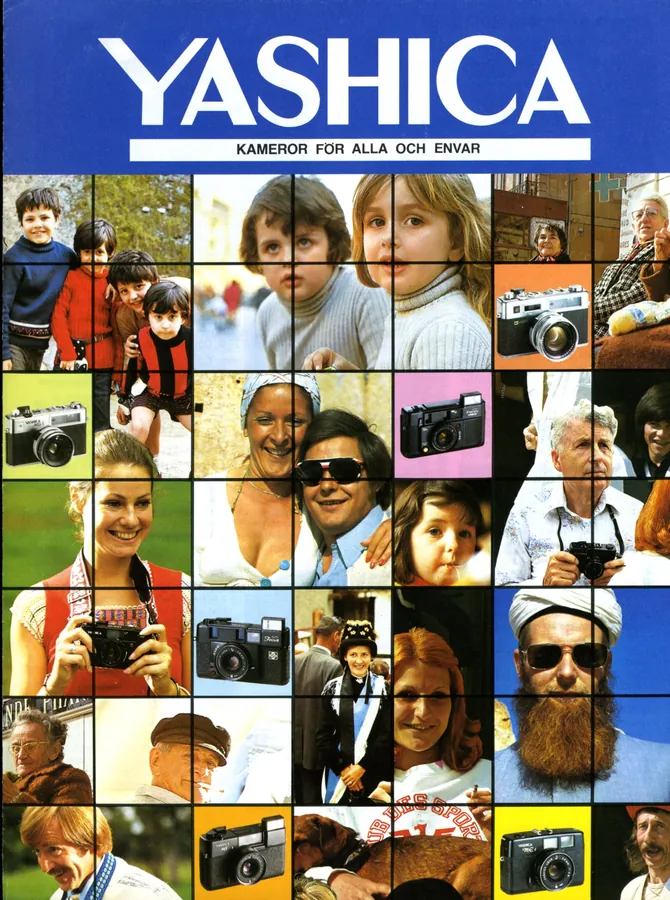
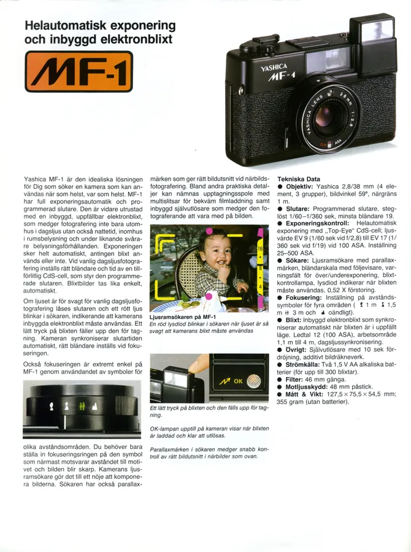
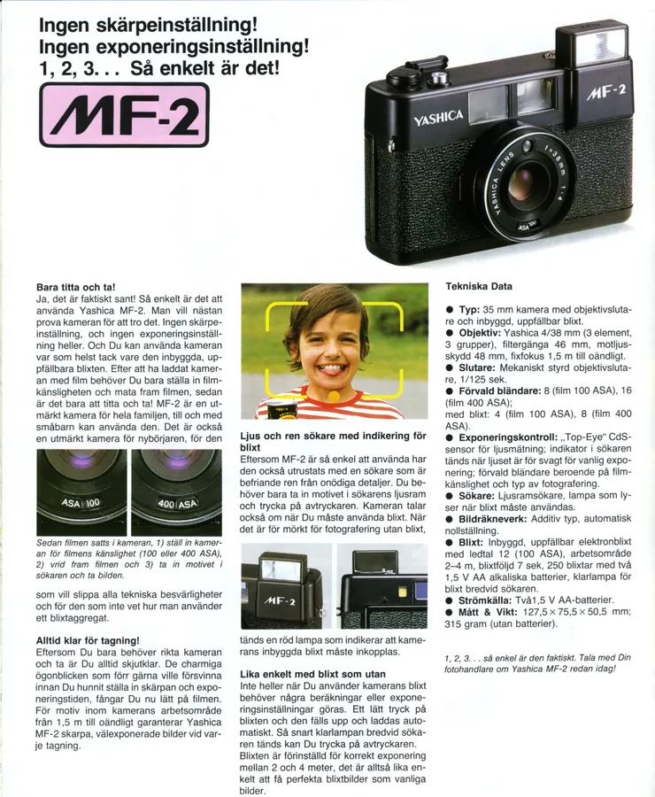
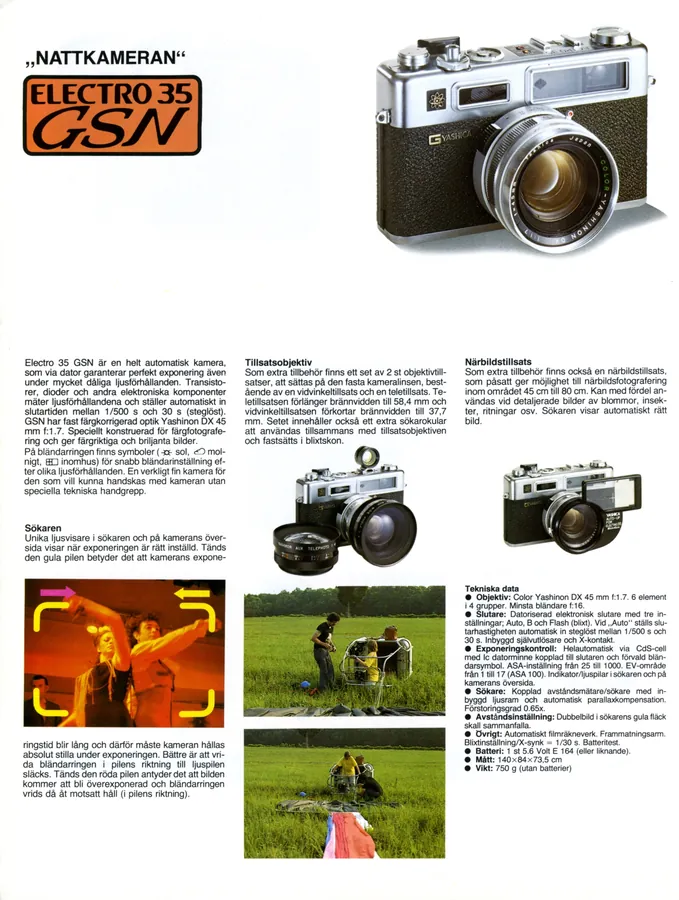
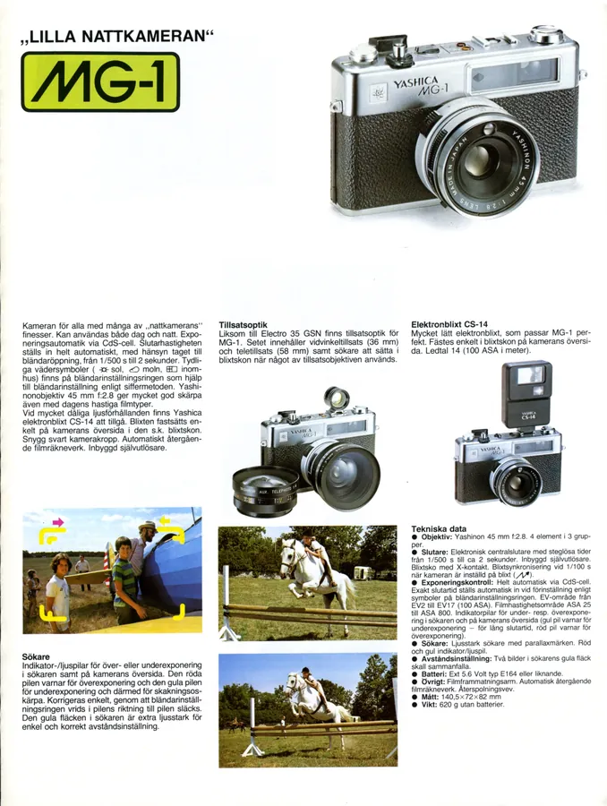
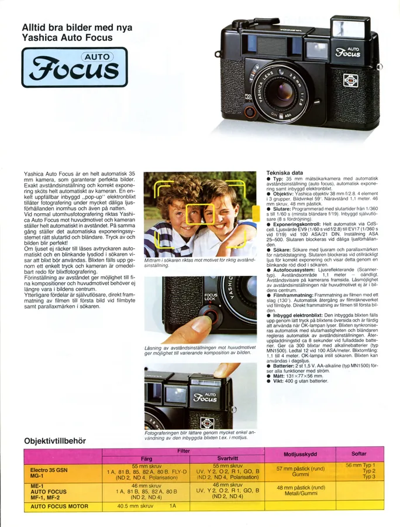
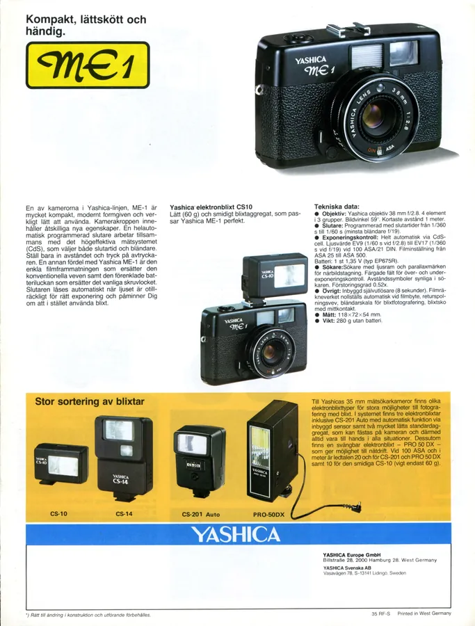

Przejdź do treści
Zenbliski
Menu
Archiwalne
Analogowe
Kolekcja
Akcesoria foto
Materiały reklamowe
Artykuły – blog
Foto ciekawostki
Cyfrowe
Materiały reklamowe
Foldery i prospekty
Yashica Auto Focus,
MF-1,
MF-2,
Electro 35 GSN,
MG-1,
ME 1, szwedzki







Poprzednia
Ricoh XR6 z AF Rikenon, szwedzki
Następna
Yashica catalogue général 1973, francuski